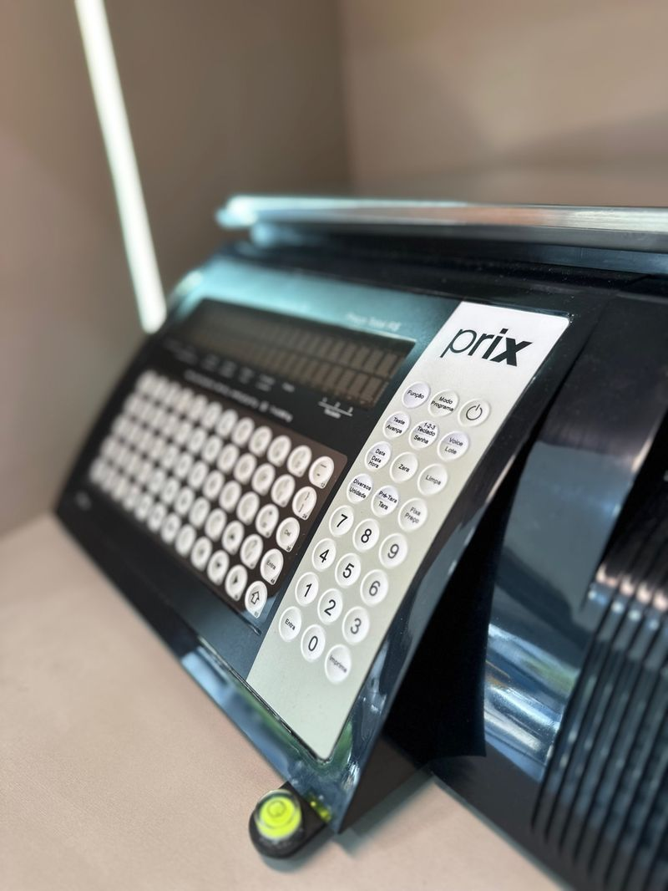
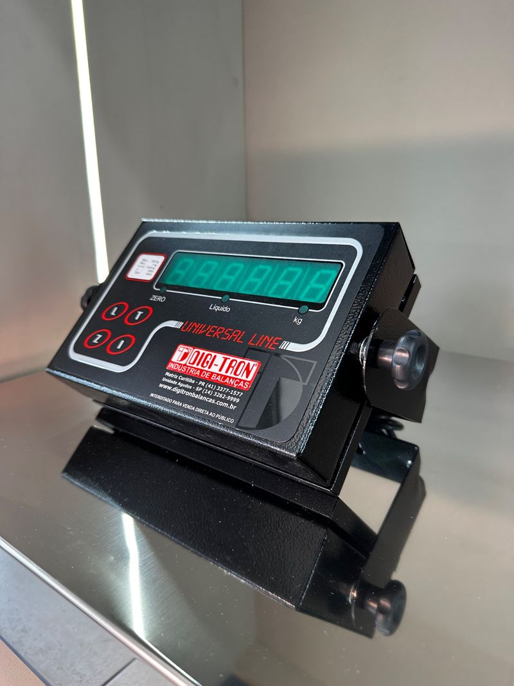
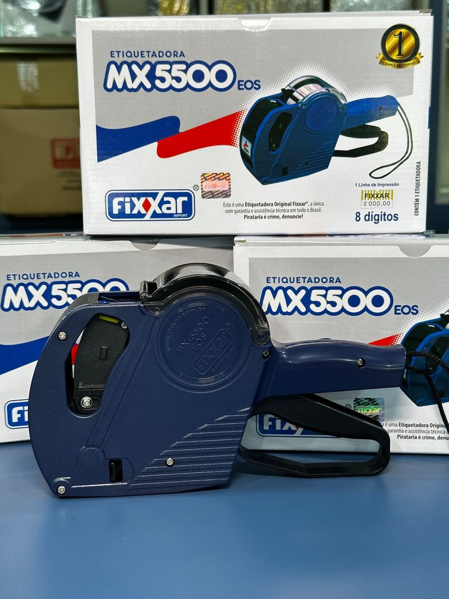
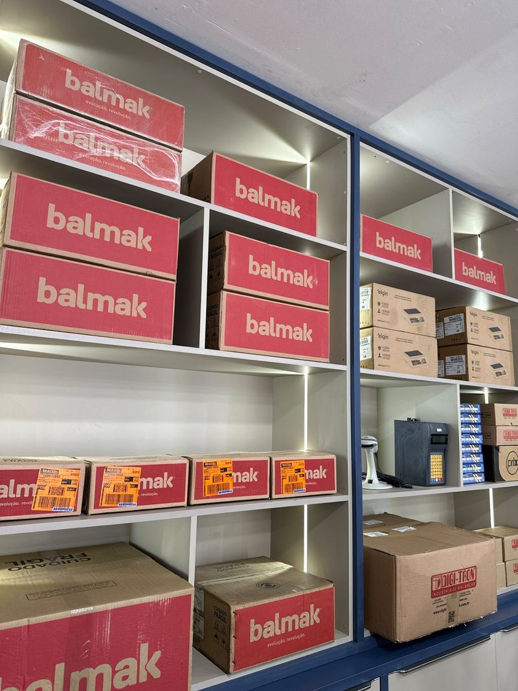
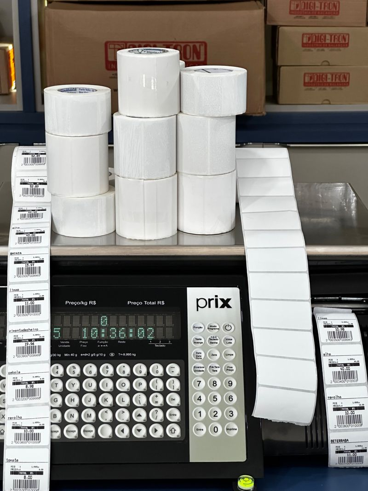
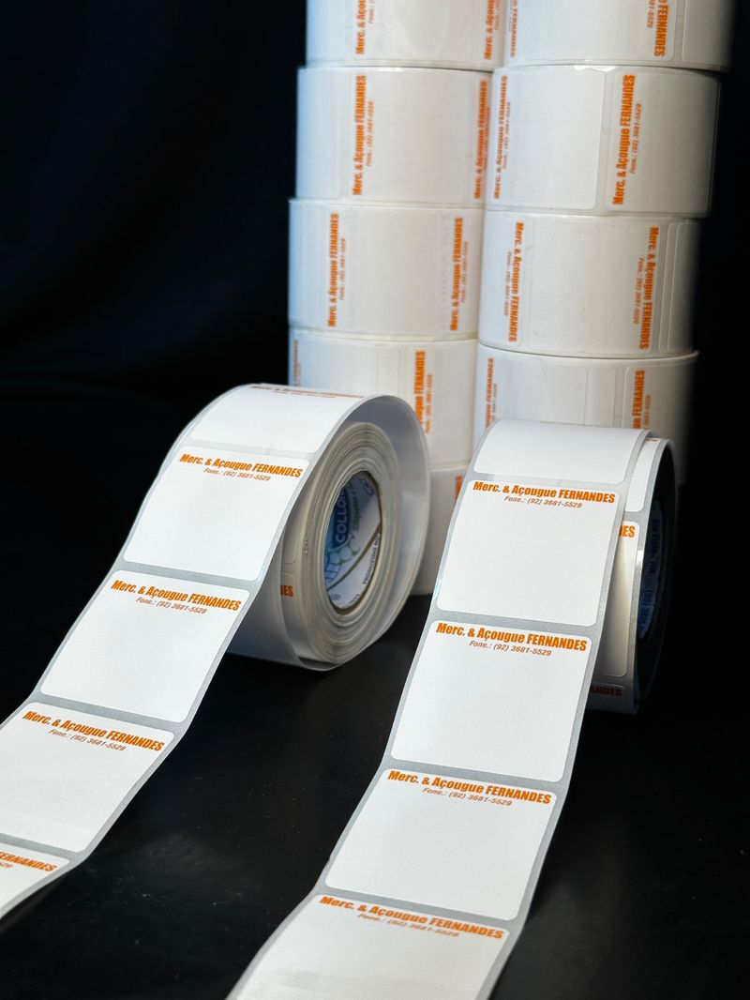

A CML Balanças é especialista em venda, assistência técnica e calibração de balanças multimarcas, atuando com máxima precisão e atendimento personalizado. Nossa equipe está preparada para atender desde pequenos comércios até grandes indústrias e operações de pesagem rodoviária.
Gancho, plataforma, rodoviária, precisão, cozinha e mais.
Atuamos em todos os modelos de balanças com serviço rápido e confiável.
Laudos técnicos emitidos de acordo com padrões de qualidade.
Para garantir a performance constante do seu equipamento.
Etiquetas personalizadas e modelos Elgin e Triunfo.
Integração de sistemas para otimizar processos industriais.
Vamos até empresas, galpões, indústrias e propriedades rurais.
Venda de componentes certificados com garantia de durabilidade.
Suporte oficial para equipamentos Triunfo.

Somos assistência técnica autorizada Triunfo e trabalhamos também com diversas outras marcas líderes de mercado. Todas as peças utilizadas são originais para garantir qualidade e durabilidade.
Concreteiras e construtoras
Transportadoras e pesagem rodoviária
Indústrias de transformação e produção
Supermercados, atacarejos e comércio em geral
Frigoríficos e agroindústrias
Fazendas, granjas e áreas rurais
Onde cada grama conta, a CML entrega confiança.
Balança Prix com teclado e display

Indicador universal para balanças

Etiquetadora e caixas Fixxar MX 5500

Estoque variado

Rolos de etiquetas em balança Prix

Etiquetas personalizadas em rolo
“Técnicos atenciosos, serviço rápido e com ótimo custo-benefício. Recomendo demais.”
“Já precisei da equipe da CML em cima da hora e eles me atenderam com excelência. Salvou minha linha de produção!”
“Confio na CML porque sei que qualquer balança que sair de lá está pronta pra trabalhar.”
Entre em contato conosco para solicitar um orçamento ou tirar dúvidas.
⚠️ Não espere a balança falhar para agir! Evite prejuízos, multas e retrabalho. Faça manutenção preventiva e conte com uma equipe que entende do assunto.